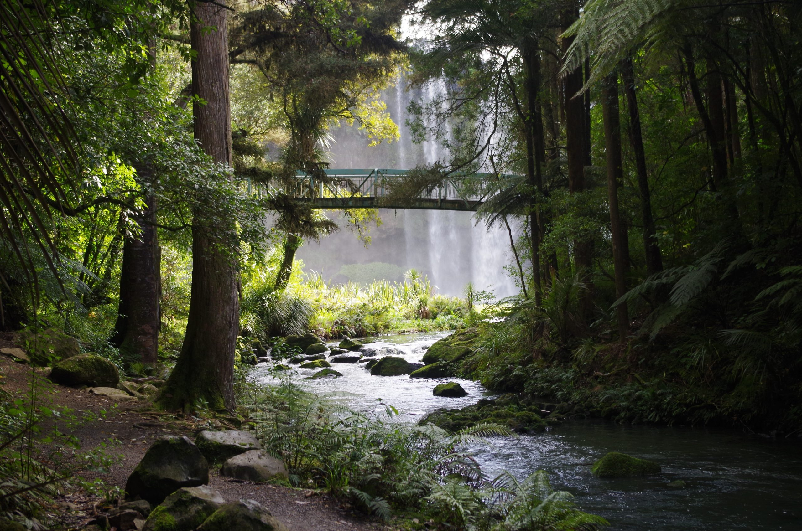

How To Help

Kaitiakitanga means guardianship, stewardship and protection in Maori.

Traditionally, it was the Maori way of managing the environment. This included things such as hunting and fishing only for sustenance (not as a sport), using bird snares at the right time (not during the birds' breeding season, for example), and taking only what was needed.
In recent times, Kaitiakitanga is common used to explain we can help the environment through a Maori lens. An example of this is a rahui, which is a temporary ban on taking food from an area. This helped nature restore itself from human influence, thus making hunting and gathering practices sustainable.
As individuals, we can all be kaitiaki (guardians) of the environment in many ways.
Firstly, we can eat less meat and dairy. Meat and dairy products use up a lot of resources to feed and take care of them. Thus, they cause a lot of emissions through producing feed, maintaining equipment, and even from their waste (fecal material). This means that if you use/consume less of them, you can reduce your contribution to global carbon emissions.
Secondly, you can support sustainable brands. Supporting sustainable brands helps to not only reduce your contribution to climate change, but grow the businesses you support, meaning more people can know about their business and buy their products.
Thirdly, you could join a tree planting or local environmental initiatives. Planting trees means there are more trees to help absorb carbon emissions, helping to cool our planet down. As well as this, joining environmental initiatives helps to bring more attention to climate change, and thus get more people helping to slow climate change.
Finally, you can invest in/switch to renewable energy. Switching to renewable energy includes things such as buying and implementing solar panels into your roofs. This helps to reduce your reliance on fossil fuels, thus improving the environment
Even though these things seem like small changes to your life, together with other people, they can have a big impact on slowing down climate change.